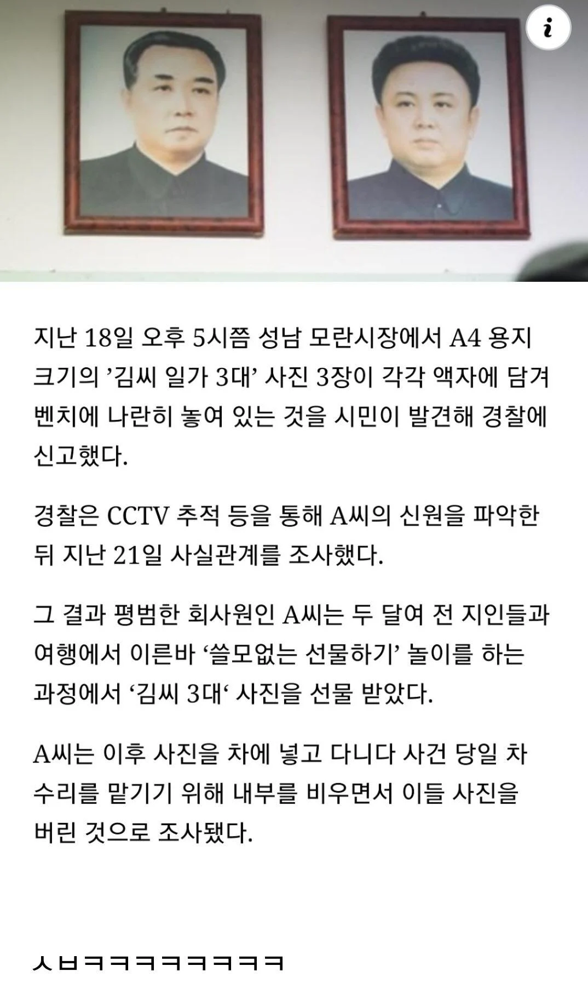

쓸모없는 선물 ㅋㅋㅋ

쓸모없는 선물 ㅋㅋㅋ
저거 과거 군사정권 시절이라면 분명 간첩으로 조사받았을거 같다 ...ㅋㅋㅋ
조사로 끝났을까?
ㅆㅂ 똥휴지로도 쓰기 싫네
표적지로 쓰기
존나 깊은 추억이 남았네
"시발놈아 너때문에 경찰조사받음"
우리도 쓸모없는 선물로 저거 알아보는 새끼 있었는데 ㅋㅋ
이런이야기 한 10년전에 커뮤에서 본듯한데 쓸모없는 물건 대회했다가 김씨 3부자 액자 나왔다고.. 그 사건 동일인인가..
전쟁나면 걸어 둘려고 그랬나 ㅋㅋㅋㅋ
혹시 간첩인가? 잡으면 돈받나? 심정으로 신고도 할만하고 조사도 할만한둣ㅋㅋㅋㅋㅋㅋㅋㅋ